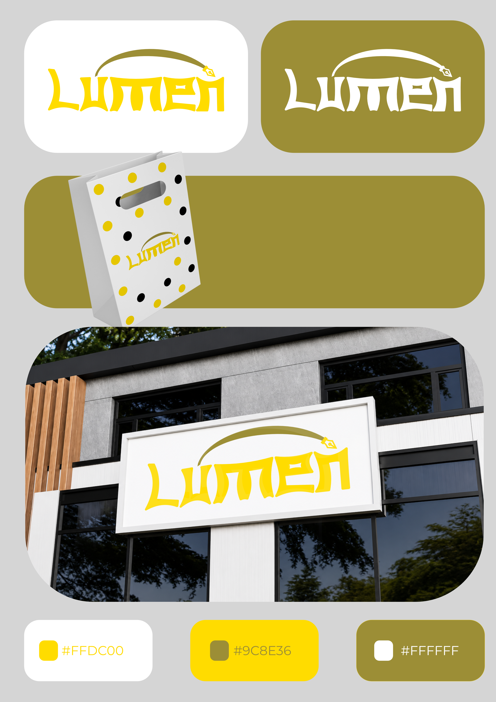
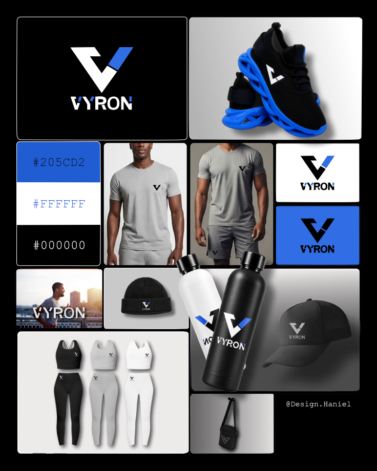

○
Originalidade
Encontrar uma voz própria em vez de repetir fórmulas.
singularUm espaço onde desejos, ideias e conceitos encontram uma forma visual única.
Explorar trabalho ↘Porque cada projeto começa com um desejo. E meu trabalho é descobrir como transformar esse desejo em algo que possa ser visto, sentido e lembrado.

“Design é emoção representada.”
Sou Haniel, graduando em Design Gráfico e designer independente. Encontrei no design uma forma de colocar ideias em prática e transformar sentimentos em expressão visual.
Busco criar identidades com originalidade, conceito, criatividade e profundidade — evitando soluções que sejam apenas bonitas, mas sem significado.
Uma identidade não precisa apenas chamar atenção. Ela precisa ter um motivo para existir.
Encontrar uma voz própria em vez de repetir fórmulas.
singularUma escolha visual começa com uma ideia que faça sentido.
intençãoExplorar caminhos até encontrar uma solução que surpreenda.
possibilidadeMais do que aparência: contexto, intenção e significado.
significadoTrês estudos de identidade, cada um construído a partir de um propósito, um público e uma linguagem visual próprios.

Bem-estar e cuidado
luz, clareza e acolhimento

Marca esportiva
energia e performance

Brownies e confeitaria
apetite e personalidade

Skate e cultura urbana
autenticidade e atitude
O processo começa muito antes da primeira forma aparecer na tela.
Entender o que o cliente quer construir, comunicar e fazer sentir.
Encontrar a ideia central capaz de dar direção ao projeto.
Transformar o conceito em formas, cores, tipografia e linguagem.
Construir um sistema visual único, coerente e pronto para existir.
Tem uma marca, uma ideia ou um projeto em mente? Vamos transformar isso em algo visual.